Les fourmis sont des créatures fascinantes
Anatomie
Les fourmis se distinguent morphologiquement des autres hyménoptères aculéates principalement par des antennes ayant un coude marqué (l'article basal, très long et flexible, favorise les attouchements antennaires très fréquents), deux mandibules dirigées vers l'avant (et non sous la tête), deux glandes métapleurales sur la partie postérieure du tronc, et un étranglement du deuxième segment abdominal (le pétiole) et parfois aussi du troisième (le postpétiole), ce qui forme le pédicelle. Cet étranglement donne à l'abdomen une plus grande mobilité par rapport au reste du corps. À l'exception des individus reproducteurs dotés de quatre ailes, la plupart des fourmis sont aptères. Beaucoup d'espèces de fourmis possèdent un aiguillon, souvent réduit, et qui peut être absent chez les mâles.

Ces insectes ont des organes spécifiques en relation étroite avec leur comportement élaboré : jabot social dans lequel les ouvrières récolteuses stockent des liquides, le plus souvent sucrés, et les régurgitent à des ouvrières nourrices qui à leur tour les transfèrent bouche-à-bouche aux larves et à la reine (mode de transfert appelé trophallaxie); filtre à particule (soies) au niveau du pharynx qui permet de n'absorber que la nourriture liquide, les particules solides étant stockées dans une poche infrabuccale et régulièrement vidangées.
Les plus de 12 000 espèces actuelles connues de fourmis (on en estime le nombre total à plus de 20 000, voire 30 000 à 40 000 selon le myrmécologue Laurent Keller, plusieurs centaines de nouvelles espèces étant décrites chaque année) varient en taille de 0,75 à 52 mm. La plus grande espèce connue est le fossile Titanomyrma gigantea, la reine atteignant six cm de long et quinze cm d'envergure. La plus grande ouvrière est Dinoponera quadriceps (trois cm de long). Cushman et al. notent une variation de la diversité spécifique et de la taille des fourmis européennes selon un gradient latitudinal.